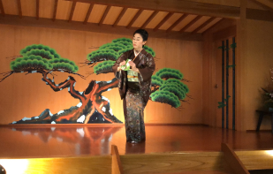
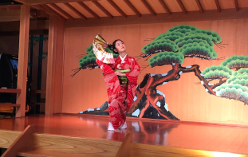
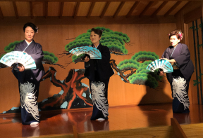
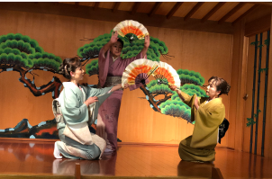

日本舞踊では踊りに種類があります。それが女舞と男舞です。
そして一人前と言われるには男舞と女舞両方とも踊れなければなりません。ここでは男舞と女舞の特徴を紹介します。
日本舞踊とは
日本舞踊は歌舞伎舞踊の技法を基本とした舞踊です。男性だけの歌舞伎から派生し、女性による舞踊が加わったことが大きな特色です。お稽古事としても普及し、日本の伝統文化を支えてきました。近代に入り日本舞踊は歌舞伎から独立し、プロの日本舞踊家が多数生まれて活躍。多くの人を魅了し、伝統芸能の一大潮流を築きました。時を経て道を究め、芸術の域まで洗練された伝統芸能の真髄とも言えます。日本の舞踊の歴史をさかのぼると、古くは平安時代（794-1192）から皇室に伝わる「雅楽」があります。 古来より日本にあった歌と舞に、中国・朝鮮から伝わってきた仏教芸術が混じり合い、独自の音楽、歌、舞踊が生まれました。茶道、華道と同様に所作が美しくなるという目的でお稽古する若い女性が多かったのです。現在では幅広い年代の人が日本舞踊をしており、全国の25歳以上日本舞踊・踊り人口は117万8000人であるとされています。



